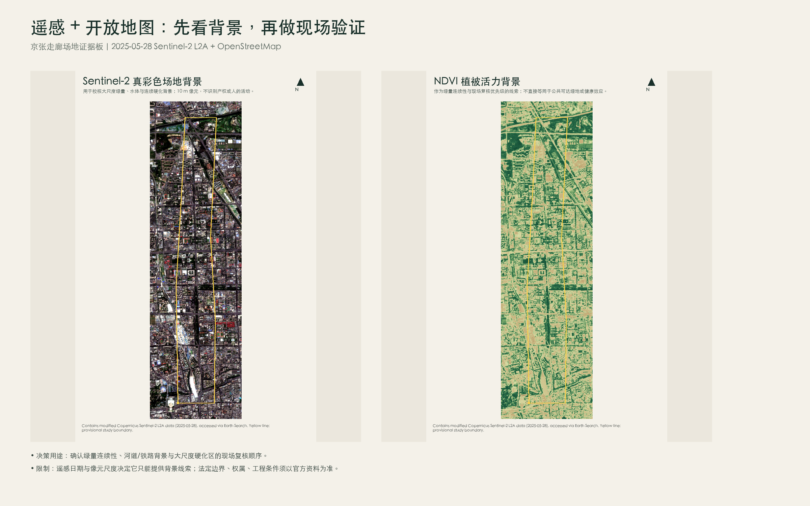
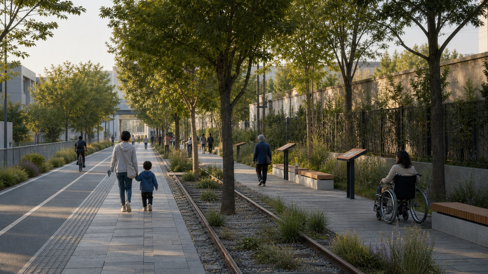
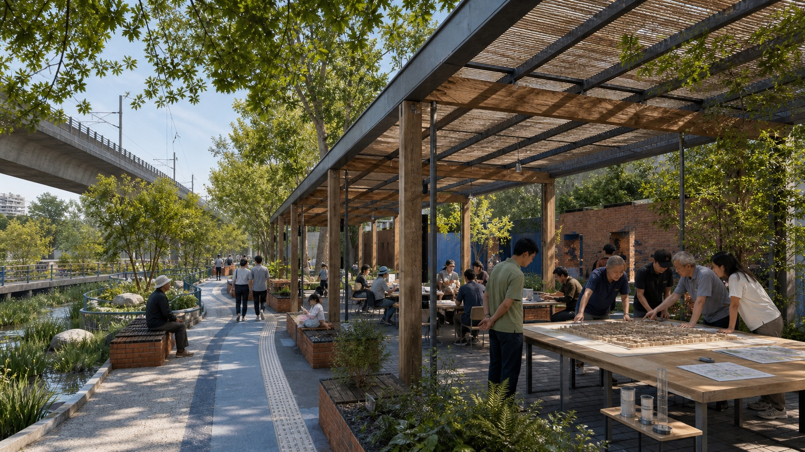
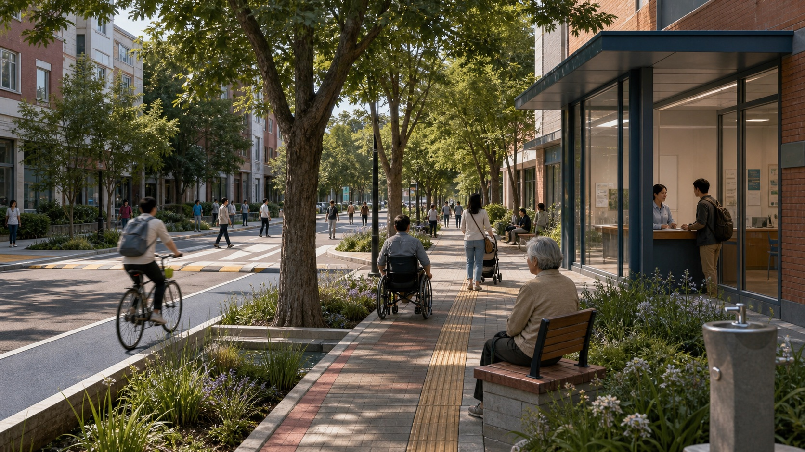
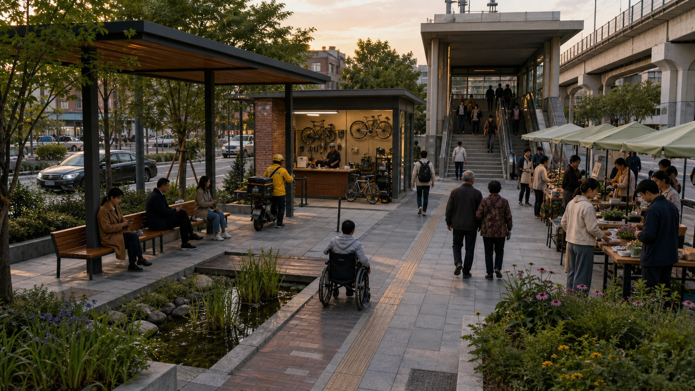
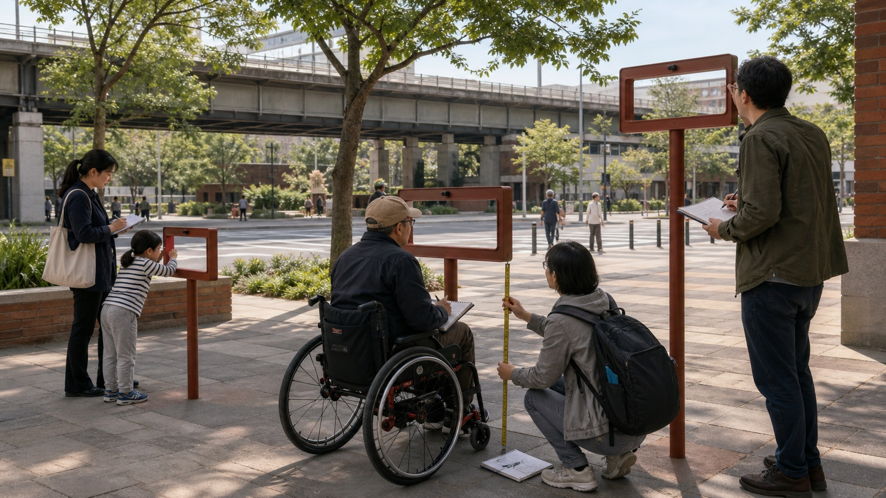
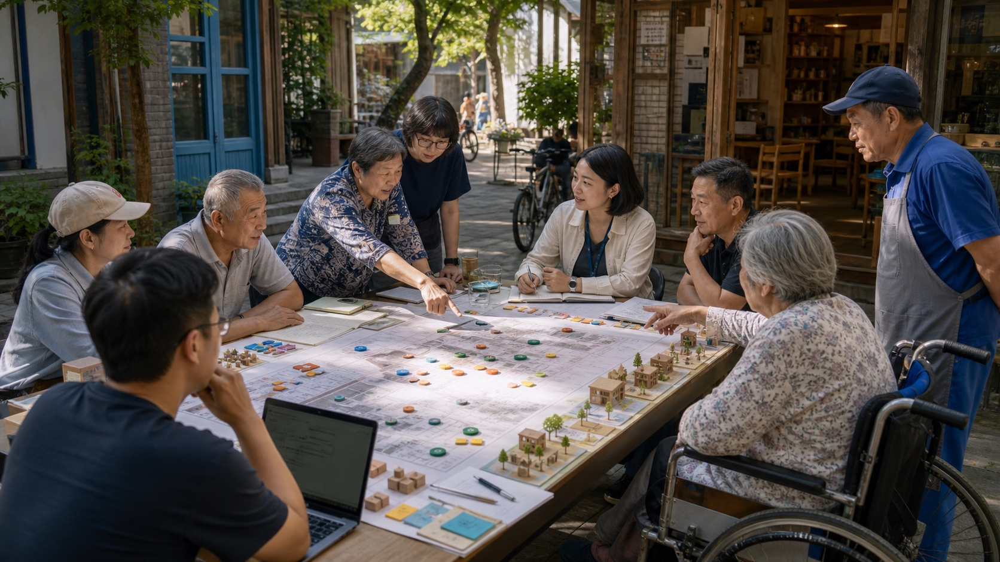

从日常环境出发，用证据比较选择｜完全离线、无跟踪、无远程资源
Yao Yao, China University of Geosciences (Wuhan), Histoshibashi University. Github: whuyao
遥感和开放地图用于理解大尺度背景、安排现场复核；八张效果图用于帮助公众理解设计意图。效果图不是现状照片、测绘证据、已批准方案或工程承诺。






